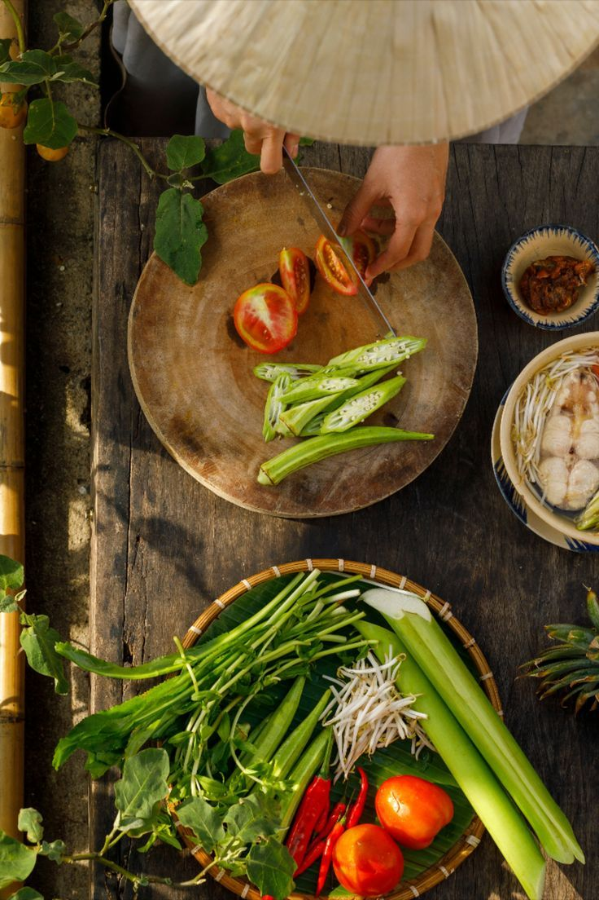
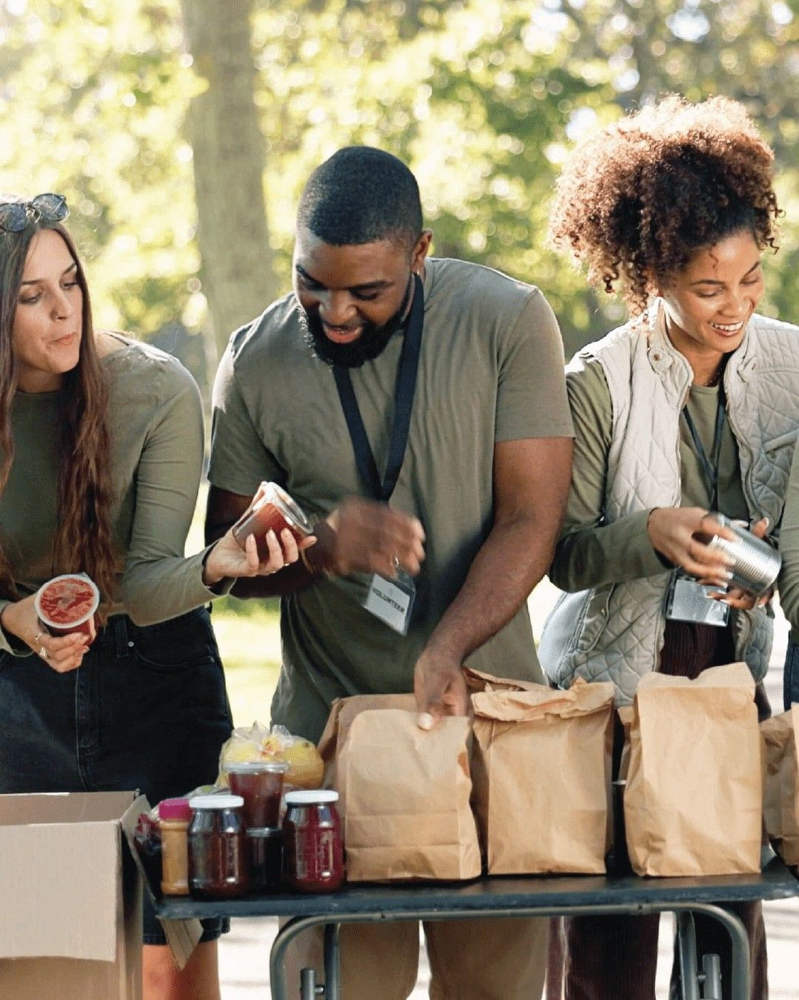

⭐
Plataforma de Doação de Alimentos
Transformando Alimentos em Esperança
Conectamos doadores com comunidades carentes. Cada alimento doado é um passo contra a fome e desperdício.
0
Kg Doados
0
Famílias
0
Parceiros


